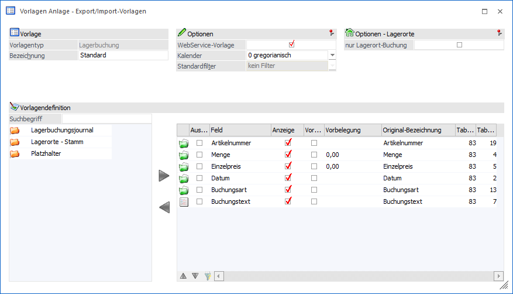
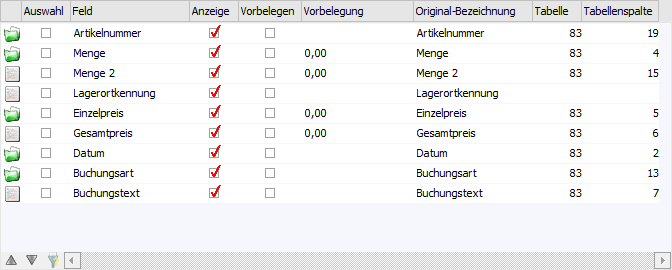

Grundsätzlich unterscheidet sich die Anlage von Vorlagen des Typs "Lagerbuchung" nicht von der Anlage anderer Typen. Aus diesem Grund werden in diesem Kapitel nur die Spezial- bzw. Sonderfunktionen beschrieben.

Optionen - Lagerorte
Ø nur Lagerort-Buchung
Mit Hilfe dieser Option wird definiert, ob Buchungen für den Bereich "Lagerbuchhaltung" oder "Lagerort-Buchung" durchgeführt werden sollen.
ü Option ist deaktiviert
Es
werden Buchungen für den Bereich der "Lagerbuchhaltung" durchgeführt
(SQL-Tabelle T083). D.h. es werden beim Export all jene Buchungen
berücksichtigt, die im Artikeljournal vorhanden sind. Bei einem Import werden
die Buchungen wiederum ins Artikeljournal abgestellt und verändern somit z.B.
den Lagerstand oder den Einstandspreis des Artikels (je nach Inhalt der
Buchung).
Hinweis
Wurde dem Artikel der Buchung eine Lagerortstruktur zugewiesen, so kann bei einem Import auch der jeweilige Lagerort angegeben werden (SQL-Tabelle T343). Bei einem Export wird die Lagerortinformation ebenfalls exportiert, wenn die damalige Erfassung auf einen explizierten Ort stattgefunden hatte.
ü Option ist aktiviert
Es werden
Buchungen für den Bereich der "Lagerort-Buchung" durchgeführt (SQL-Tabelle
T343). D.h. es werden bei einem Export all jene Buchungen berücksichtigt, welche
über das Programm "Lagerorte - Umbuchung" oder einem Import getätigt wurden. Bei
einem Import werden die Buchungen wiederum ins Lagerortjournal abgestellt und
verändern somit "nur" den Bestand des Lagerorts. Grundvoraussetzung hierbei ist
die Hinterlegung einer Lagerortstruktur im Artikel.
Hinweis
Handelt es sich um eine klassische Lagerort-Umbuchung, so wird beim Export die Buchung des "Von-Lagerorts" und des "Auf-Lagerorts" in zwei separate Buchungszeilen aufgeteilt (mit entsprechender - und + Menge). Bei einem Import kann eine Umbuchung über eine oder zwei getrennte Buchungszeilen stattfinden. Wenn alle Daten in einer Importzeile angegeben werden sollen, so müssen neben dem "Ziel" auch die "Quelle" angegeben werden.
Achtung
Die Option hat eine direkte Auswirkung auf die Tabelle "Datenfelder der Vorlage":
ü Pflichtfelder - allgemein
Wird
die Option aktiviert, so sind die Felder "Einzelpreis" und "Buchungsart" keine
Pflichtfelder und werden aus dem Aufbau der Vorlage entfernt. Bei einer
Deaktivierung der Option werden die Felder entsprechend wieder in den Aufbau
eingefügt.
ü Pflichtfelder -
Lagerort-Buchung
Wird die Option aktiviert, d.h. es sollen Buchungen des
Bereichs "Lagerort-Buchungen" ex- oder importiert werden, so muss ein Feld des
Typs "Ziel-Lagerort" im Aufbau der Vorlage vorhanden sind! Herauf wird beim
Speichern der Vorlage auch hingewiesen.
ü Normale Felder
Handelt es sich
um eine Vorlage für den Bereich "Lagerort-Buchung" (d.h. Option ist aktiviert),
so werden die Felder "Einzelpreis" und "Gesamtpreis" bei dem EXIM-Vorgang nicht
unterstützt und somit bei einem Import ignoriert (vergleichbar mit einem
Platzhalter-Feld).
Sollte es sich hingegen um eine Vorlage für den Bereich
"Lagerbuchhaltung" handeln (d.h. Option ist deaktiviert), so werden die
Lagerort-Quell-Felder beim EXIM nicht unterstützt und beim Import
ignoriert.
Auf alle nicht unterstützten Felder wird beim Speichern der
Vorlage entsprechend hingewiesen.
ü Spalte "Tabelle" /
"Tabellenspalte"
Wird die Option aktiviert, so werden die
Tabellen-Informationen aus den Spalten entfernt.
Tabelle "Datenfelder der Vorlage"

Die Definition der Felder erfolgt wie bei allen anderen Vorlagen auch. Allerdings stehen diverse Sonderfelder und -funktionen zur Verfügung.
Ø Menge 2
Wenn der Artikel der Buchung in 2 Mengen geführt wird, so kann mit Hilfe dieses Felds die 2. Menge angegeben werden. Ist das Feld nicht im Aufbau der Vorlage enthalten, so wird beim Import die Menge2 automatisch auf Grundlage des Umrechnungsfaktors von der WinLine berechnet und in die entstehende Buchung übergeben.
Hinweis
Mit Hilfe des folgenden mesonic.ini-Eintrags kann die automatische Berechnung der Menge2 deaktiviert werden:
[lagerextern]
CalcAmount2=0
Ø Gesamtpreis
Mit Hilfe dieses Felds kann der Gesamtpreis einer Lagerbuchung angegeben werden. Befindet sich das Feld nicht im Aufbau der verwendeten Vorlage, so wird der Gesamtpreis automatisch über eine Multiplikation von "Einzelpreis * Menge" gebildet.
Ø Buchungsart
Handelt es sich um eine Vorlage des Bereichs "Lagerort-Buchung" (d.h. Option "nur Lagerort-Buchung" ist aktiviert), so ist das Feld "Buchungsart" kein Pflichtfeld! Wird das Feld trotzdem verwendet, so werden bei einem Import ausschließlich die Umbuchungsart und der Nummernkreis in das Lagerortjournal geschrieben. Alle in der Umbuchungsart hinterlegbaren Prüfmechanismen werden beim Import nicht berücksichtigt. Des Weiteren werden beim Vorhandensein mehrerer Buchungsarten immer die Buchungen mit derselben Buchungsart nacheinander importiert.
Beispiel
ü Artikel "A1", Lagerort "1", Buchungsart "<leer>"
ü Artikel "A2", Lagerort "2", Buchungsart "UM"
ü Artikel "A3", Lagerort "3", Buchungsart "<leer>"
ü Artikel "A4", Lagerort "4", Buchungsart "UM"
ü Artikel "A5", Lagerort "5", Buchungsart "<leer>"
In solch einem Fall werden zuerst die Artikel "A1", "A3" und "A5" importiert und danach die Artikel "A2" und "A4".
Ø Ausprägungen
Mit Hilfe der folgenden Felder können im Zuge eines Imports Ausprägungsartikel "gesucht" oder "angelegt" werden:
ü Hauptartikelnummer (Anlage und Suchen)
ü Charge-/Identnummer (Anlage und Suchen)
ü Ausprägung1 (Anlage und Suchen)
ü Ausprägung2 (Anlage und Suchen)
ü Ablaufdatum (Anlage)
ü Herstelldatum (Anlage)
Hinweis
Das genaue Programmverhalten kann mit Hilfe der Option "Ausprägungen anlegen" des Fensters "Lagerbuchungs-EXIM" definiert werden.
Ø Bereich "Lagerorte - Stamm"
Mit Hilfe der Felder aus dem Bereich "Lagerorte - Stamm" kann der Lagerort für die Buchung angegeben werden. Hierbei werden die Lagerort-Spalten in der folgenden Reihenfolge auf Inhalt kontrolliert:
ü Lagerortkennung (höchste Priorität)
ü Lagerort-Id
ü EAN-Code
ü RFID
ü Lagerort 1 bis 6
Hinweis
Die Spalten "Lagerort 1" bis "Lagerort 6" sind als ein Zuweisungselement zu verstehen. D.h. wenn ein Import auf die 2 Hierarchie-Ebene erfolgen soll, so muss auch die Ebene 1 angegeben werden.
Des Weiteren werden die Felder nach dem Typ "Ziel" und "Quelle" unterschieden, wobei der Vermerk "Ziel" nur erscheint, wenn die Option "nur Lagerort-Buchung" aktiviert wurde. Die Quelle-Felder werden hierbei nur unter folgenden Umständen benötigt:
ü Es sollen Umbuchungen für den Bereich der "Lagerort-Buchung" importiert werden (Option "nur Lagerort-Buchung" ist aktiviert).
ü Alle Informationen für die Umbuchung sollen in Form einer Buchungszeile übergeben werden. Die angegebene Menge wird hierbei vom Quell-Lagerort abgebucht und dem Ziel-Lagerort zugebucht.
Ø Lagerortkennung
Mit Hilfe dieses Felds kann ein Lagerort vorgegeben werden. Bei einem Export wird immer der gesamte Aufbau des Lagerorts geschrieben, d.h. "Lagerortfunktion" + / + Lagerortnamen (einzelne Hierarchie-Ebenen wiederum per "/" getrennt). Bei einem Import sind wiederum folgende Angaben möglich:
ü ID
Handelt es sich um
numerischen Inhalt, dann versucht die WinLine einen Ort mit passender ID zu
finden und für den Import zu verwenden. Wurde keine passende ID gefunden, so
wird mit einer Suche in der Bezeichnung fortgesetzt.
ü Bezeichnung (kurz)
Wenn in dem
Importfeld kein "/" vorkommt, so erfolgt eine Suche in dem Feld "Bezeichnung"
der Lagerorte. Wird ein passender Ort erkannt, so wird dieser für den Import
verwendet.
ü Bezeichnung (lang)
Sollten
Lagerortbezeichnungen doppelt vorhanden sein, so sollte für den Import der
eindeutige Lagerort angegeben werden. Ist dieses via ID nicht möglich, so kann
die Lagerortbezeichnung inklusive Hierarchie angegeben werden.
Beispiel
Die Ware soll aus dem "Regal 2" genommen werden, wobei es diese Bezeichnung in den Bereichen "Halle Nord" und "Halle Süd" gibt (Lagerortstruktur "Standard"). Da die Angabe "Regal 2" somit nicht eindeutig ist (es ist das Regal in der Süd-Halle gemeint), muss der Import mit Hierarchie erfolgen (2 Varianten sind möglich):
ü Standard / Halle Süd/ Regal 2
ü Halle Süd / Regal 2
Achtung
Sollte ein nicht eindeutiger Lagerort importiert werden (z.B. kommt der Lagerortname mehrfach vor), so ordnet die WinLine automatisch den zuerst gefundenen Ort zu.
Ø Spalten "Vorbelegen" / "Vorbelegung"
Eine Vorbelegung beim Import wird nur unterstützt, wenn auch die "Anzeige" des Datenfelds aktiviert wurde!
Ø Spalten "Tabelle" / "Tabellenspalte"
Wird die Option "nur Lagerort-Buchungen" aktiviert, so werden die Tabellen-Informationen aus den Spalten entfernt.